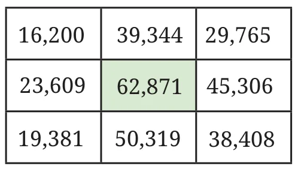
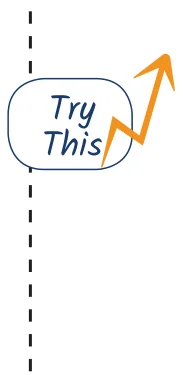

- There is only one supercell (number greater than all its neighbours) in this grid. If you exchange two digits of one of the numbers, there will be 4 supercells. Figure out which digits to swap.


- How many rounds does your year of birth take to reach the Kaprekar constant?
- We are the group of 5-digit numbers between 35,000 and 75,000 such that all of our digits are odd. Who is the largest number in our group? Who is the smallest number in our group? Who among us is the closest to 50,000?
- Estimate the number of holidays you get in a year including weekends, festivals and vacation. Then, try to get an exact number and see how close your estimate is.
- Estimate the number of liters a mug, a bucket and an overhead tank can hold.
- Write one 5-digit number and two 3-digit numbers such that their sum is 18,670.
- Choose a number between 210 and 390. Create a number pattern similar to those shown in Section 3.9 that will sum up to this number.
- Recall the sequence of Powers of 2 from Chapter 1, Table 1. Why is the Collatz conjecture correct for all the starting numbers in this sequence?
- Check if the Collatz Conjecture holds for the starting number 100.
- Starting with 0, players alternate adding numbers between 1 and 3. The first person to reach 22 wins. What is the winning strategy now?